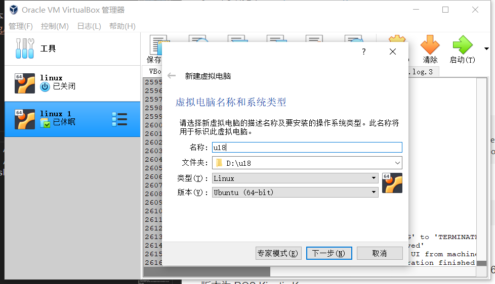
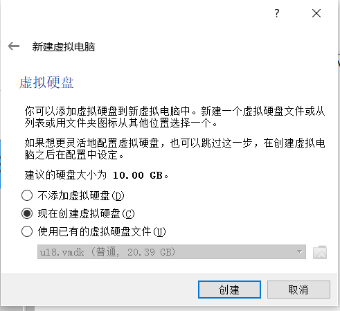
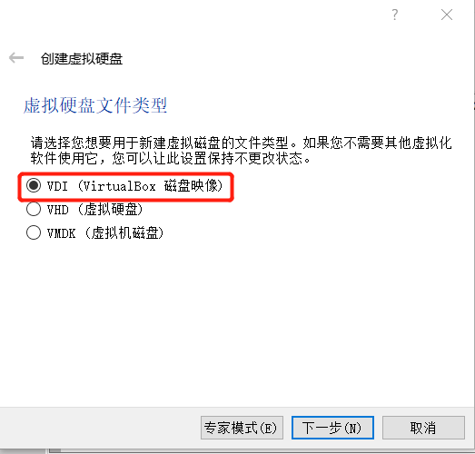
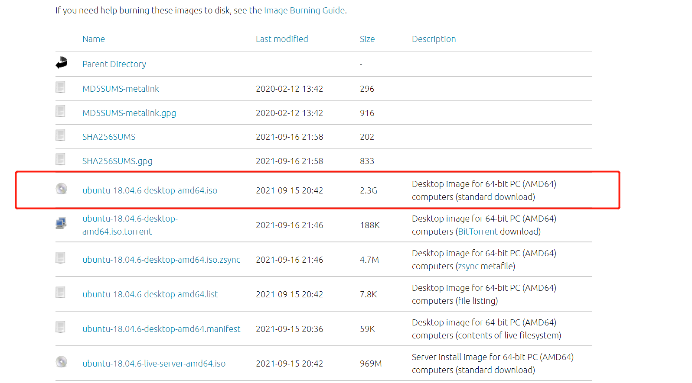
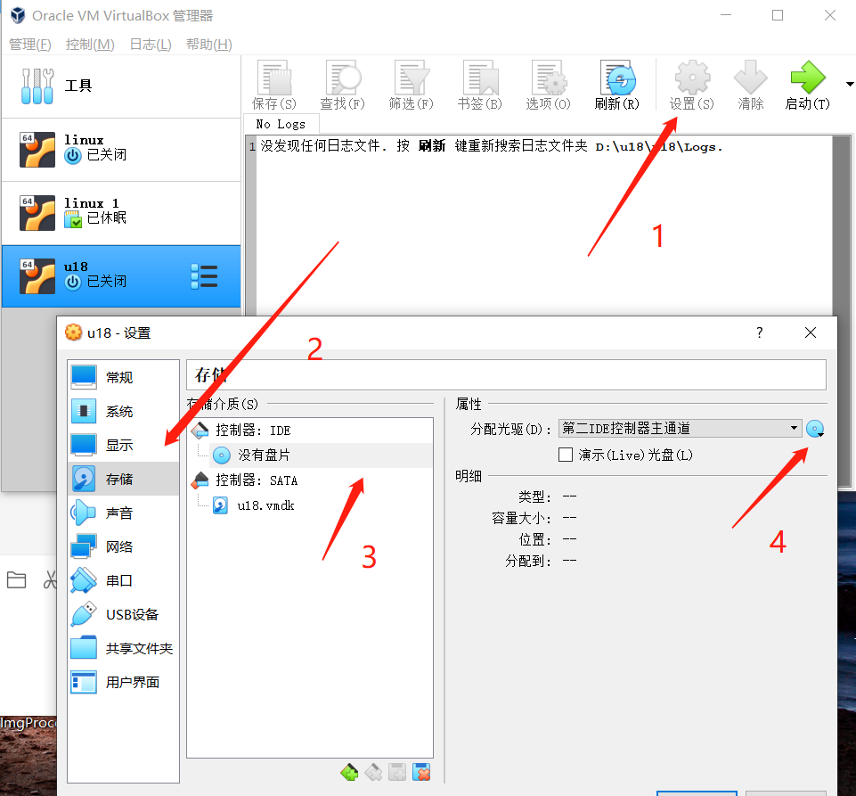
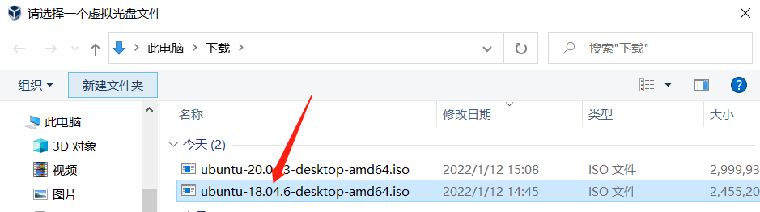
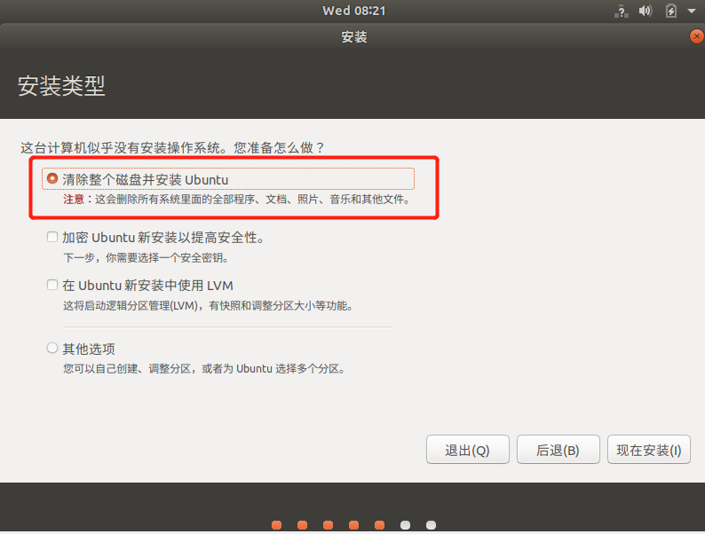
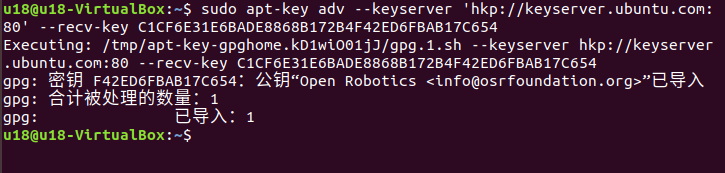
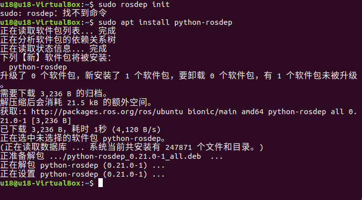
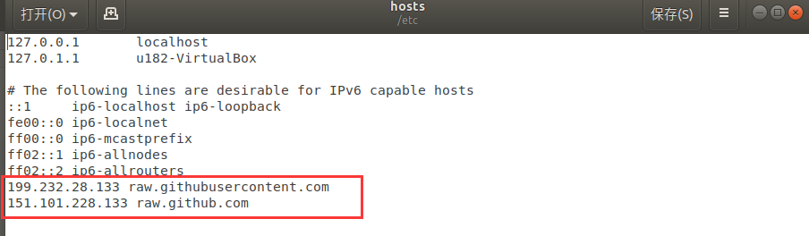

ROS1 环境搭建
本教程提供两种方式来搭建 Ubuntu20.04 + ROS1 开发环境：
- 方式一：导入虚拟机镜像（推荐） → 最快上手，内置完整环境
- 方式二：自定义安装环境 → 从零开始搭建，适合需要灵活定制的用户
方式一：导入虚拟机镜像
推荐：这是最快捷的方法，适合初学者。
注意： 为了降低环境搭建难度，我们将给出 Linux 系统镜像（Ubuntu 20.04）、Virtual Box 安装包以及其扩展包。 接下来将教导大家如安装 Virtual Box 以及导入 Linux 系统镜像（默认用户为u202, 默认密码为123）。 已内置环境： ROS1 + Moveit + Git + pymycobot + mycobot_ros
1 安装虚拟机
前往官方网站下载虚拟机 Virtual Box
VirtualBox 安装包：Windows hosts
VirtualBox 拓展包：VirtualBox 7.0.10 Oracle VM VirtualBox Extension Pack
当然，如果您已经拥有您的虚拟机，您可以跳过该步骤。
我们选择下载 Virtual box，因为它是免费的。


2 下载 Linux 系统镜像
点击下载：Linux ubuntu20.04
3 导入 Linux 系统镜像
在 Virtual Box 界面中点击 管理 -> 导入虚拟电脑 -> 选择虚拟镜像 -> 选择安装路径并进行导入，如下安装即可。


等待镜像导入即可，如下图即为安装成功。

然后启动系统即可，用户名为 u202, 默认密码为 123
4 更新pymycobot
为了能使用最新的机械臂驱动库，请打开终端执行下面命令更新：
pip3 install pymycobot --upgrade
5 更新mycobot_ros
为了保证用户能及时使用最新的官方包，可以通过文件管理器进入/home/u202/catkin_ws/src文件夹，打开控制台终端（ 快捷键 Ctrl+Alt+T ) ，输入以下命令进行更新：
# 克隆github上的代码
cd ~/catkin_ws/src
# 删除原来的mycobot_ros包
sudo rm -rf mycobot_ros
git clone --depth 1 https://github.com/elephantrobotics/mycobot_ros.git
cd .. # 回到工作区
catkin_make # 在工作区中构建代码
source devel/setup.bash # 添加环境变量
方式二：自定义安装环境
1 虚拟机安装
前往官方网站下载虚拟机 Virtual Box
VirtualBox 安装包：Windows hosts
VirtualBox 拓展包：VirtualBox 7.0.10 Oracle VM VirtualBox Extension Pack
当然，如果您已经拥有您的虚拟机，您可以跳过该步骤。
我们选择下载 Virtual box，因为它是免费的。
2 新建虚拟机
- 在控制中选择新建
输入虚拟机名称和虚拟机存放的位置，选择虚拟机类型为Linux，选择 ubuntu64 位版本，进行下一步。

- 按照自己的需求配置内存大小，进行下一步。

- 选择现在创建虚拟硬盘，进行创建。

虚拟硬盘类型选择VDI类型，进行下一步。

分配虚拟硬盘大小，由于需要安装 ubuntu 系统，而且还会在该系统中进行操作，建议大小不要低于 20G。


3 下载 ubuntu 系统
请根据自己的需要选择 ubuntu 版本进行安装，默认使用 ubuntu 20.04系统版本
注意： ROS2需要下载20.04 版本。
每个版本的安装方法和过程都是相同的，这里以 18.04 版本作为例子进行安装

下载完成后有如图文件：

4 导入 ubuntu 到虚拟机中
在 Virtual box 中找到之前安装的虚拟机，进入设置，并在存储中给控制器分配光盘：



然后打开虚拟机进行 ubuntu 安装，并点击启动。
5 ubuntu 安装
等待系统启动，进入欢迎界面，选中“中文（简体）”，并点击“安装 Ubuntu”按钮；

点击“继续”按钮；

选中“清除整个磁盘并安装 Ubuntu”选项，点击“现在安装”按钮；

在弹出的对话框中点击“继续”按钮；

设置地理位置，点击“继续”按钮；

设置用户名和密码，点击“继续”按钮；

进入系统安装界面，请耐心等待；

待安装完成，在弹出的对话框中，点击“现在重启”按钮，完成安装。

6 ROS 安装
基本的开发环境搭建需要安装机器人操作系统 ROS、MoveIt 以及 git 版本管理器，以下分别介绍其安装方法及流程。
myCobot Pro 450 的设备可参考以下介绍的安装方式及流程。
在这里我们选择的系统为 Ubuntu 20.04, 对应 ROS 版本为 ROS Noetic
NOTE: 目前我们不提供 windows 安装 ROS 的任何参考, 若有需要请参考 https://www.ros.org/install/
6.1 开始安装
1 添加源
Ubuntu 本身的软件源列表中没有 ROS 的软件源，所以需要先将 ROS 软件源配置到软件列表仓库中，才能下载 ROS 。打开一个控制台终端(快捷键Ctrl+Alt+T),输入如下指令：
- 官方源：
sudo sh -c 'echo "deb http://packages.ros.org/ros/ubuntu $(lsb_release -sc) main" > /etc/apt/sources.list.d/ros-latest.list'
- 若下载速度缓慢，推荐就近选择一个镜像源替换上面的命令。例如，Tsinghua University 为：
sudo sh -c '. /etc/lsb-release && echo "deb http://mirrors.tuna.tsinghua.edu.cn/ros/ubuntu/ `lsb_release -cs` main" > /etc/apt/sources.list.d/ros-latest.list'
这里会要求输入用户密码，输入安装 Ubuntu 时设置的用户密码即可。
2 设置秘钥
配置公网秘钥,这一步是为了让系统确认我们的路径是安全的的，这样下载文件才没有问题，不然下载后会被立刻删掉：
sudo apt-key adv --keyserver 'hkp://keyserver.ubuntu.com:80' --recv-key C1CF6E31E6BADE8868B172B4F42ED6FBAB17C654
执行结果显示如下：

3 安装
在加入了新的软件源后，需要更新软件源列表，打开一个控制台终端(快捷键Ctrl+Alt+T),输入如下指令：
sudo apt-get update
执行安装 ROS，打开一个控制台终端(快捷键Ctrl+Alt+T),请按照自己的 Ubuntu 版本选择输入以下指令：
# Ubuntu 20.04
sudo apt install ros-noetic-desktop-full
这里推荐安装完整的 ROS，防止库和依赖的缺失。
安装过程耗时比较长，需要耐心等待
- 若安装过程中，控制台终端出现如下错误信息，则需要更换/etc/apt/sources.list 中的软件源列表。

- 打开一个控制台终端(快捷键Ctrl+Alt+T)，输入如下指令：
sudo gedit /etc/apt/sources.list
- 将 sources.list 中的官方软件源全部替换成下面的阿里云软件源：
Ubuntu 20.04 版本：
deb http://mirrors.aliyun.com/ubuntu/ focal main restricted universe multiverse
deb-src http://mirrors.aliyun.com/ubuntu/ focal main restricted universe multiverse
deb http://mirrors.aliyun.com/ubuntu/ focal-security main restricted universe multiverse
deb-src http://mirrors.aliyun.com/ubuntu/ focal-security main restricted universe multiverse
deb http://mirrors.aliyun.com/ubuntu/ focal-updates main restricted universe multiverse
deb-src http://mirrors.aliyun.com/ubuntu/ focal-updates main restricted universe multiverse
deb http://mirrors.aliyun.com/ubuntu/ focal-proposed main restricted universe multiverse
deb-src http://mirrors.aliyun.com/ubuntu/ focal-proposed main restricted universe multiverse
deb http://mirrors.aliyun.com/ubuntu/ focal-backports main restricted universe multiverse
deb-src http://mirrors.aliyun.com/ubuntu/ focal-backports main restricted universe multiverse
- 配置完成后，sources.list 文件内容如下所示，点击保存并退出。

- 更新软件源列表，在控制台终端输入:
sudo apt-get update
- 在控制台终端输入安装 ROS 的指令：
# Ubuntu 20.04
sudo apt install ros-noetic-desktop-full
安装过程耗时比较长，需要耐心等待
4 配置 ROS 环境到系统
rosdep 让你能够轻松地安装被想要编译的源代码，或被某些 ROS 核心组件需要的系统依赖，在终端依次执行以下命令，打开一个控制台终端(快捷键Ctrl+Alt+T)。
如果您的系统没有安装 rosdep,请使用命令sudo apt install python-rosdep进行安装。
如果您的安装的 Ubuntu 系统是 20.04 版本，请使用命令sudo apt install python3-rosdep进行安装，完成后执行 rosdep 初始化命令。

初始化 rosdep：
sudo rosdep init
若出现如下图所示的错误提示：

解决方法： 修改 hosts 文件，控制台终端输入下面的指令：
sudo gedit /etc/hosts
在文件内容末端，加入以下两个网址的 IP 地址实现访问：
199.232.28.133 raw.githubusercontent.com
151.101.228.133 raw.github.com

修改完成后，在控制台终端执行：
sudo rosdep init
rosdep update
初始化完成后，为了避免每次关掉终端窗口后都需要重新生效 ROS 功能路径，我们可以把路径配置到环境变量中，这样在每次打开新的终端时便可自动生效 ROS 功能路径 在终端依次执行以下命令，打开一个控制台终端(快捷键Ctrl+Alt+T)：
6.2 设置 ros 环境
执行以下命令：
# Ubuntu 20.04
echo "source /opt/ros/noetic/setup.bash" >> ~/.bashrc
source ~/.bashrc
6.3 安装 ROS 额外依赖项
在终端输入以下命令安装 ROS 额外依赖项，打开一个控制台终端(快捷键Ctrl+Alt+T)：
sudo apt install python3-rosdep python3-rosinstall python3-rosinstall-generator python3-wstool build-essential
# Ubuntu 20.04
sudo apt install ros-noetic-joint-state-publisher-gui
6.4 验证安装
ROS 系统的启动需要一个 ROS Master，即节点管理器，我们可以在终端输入 roscore 指令来启动 ROS Master。
为了验证 ROS 是否安装成功，打开一个控制台终端(快捷键Ctrl+Alt+T)，在终端执行以下命令：
roscore
当显示如下界面，则表示 ROS 安装成功

roscore 命令启动了一个节点管理器，其作用就是用于节点管理，在一个 ros 系统中，有且只有一个，它是 ros 节点运行的前提，所以在执行启动 ros 节点前，第一步都需要执行 roscore。
更多更详细的安装指导，可以参考官方的安装指导，网址: http://wiki.ros.org/ROS/Installation
7 MoveIt 安装
MoveIt 是 ros 中一系列移动操作的功能包的组成，主要包含运动规划，碰撞检测，运动学，3D 感知，操作控制等功能。
7.1 更新软件源列表
打开一个控制台终端(快捷键Ctrl+Alt+T)，在终端窗口输入以下命令，以更新软件源列表：
sudo apt-get update
7.2 安装 MoveIt
打开一个控制台终端(快捷键Ctrl+Alt+T)，在终端窗口输入以下命令，执行 MoveIt 的安装：
# Ubuntu20.04
sudo apt-get install ros-noetic-moveit
8 git 安装
8.1 添加软件源
将 git 安装的软件源添加到 ubuntu 的软件源列表中，打开一个控制台终端(快捷键Ctrl+Alt+T)，在终端窗口输入以下命令：
sudo add-apt-repository ppa:git-core/ppa
8.2 更新软件源列表
打开一个控制台终端(快捷键Ctrl+Alt+T)，在终端窗口输入以下命令，以更新软件源列表：
sudo apt-get update
8.3 安装 git
打开一个控制台终端(快捷键Ctrl+Alt+T)，在终端窗口输入以下命令，执行 git 的安装：
sudo apt-get install git
8.4 验证安装
读取 git 版本，打开一个控制台终端(快捷键Ctrl+Alt+T)，在终端窗口输入以下命令：
git --version
在终端中可以显示 git 版本号，如下，即为安装成功

8.5 使用
在后续下载 ros 包需要用到 git，git 的使用可以参考下面链接：
9 mycobot_ros 安装
mycobot_ros 是 ElephantRobotics 推出的，适配旗下桌面型六轴机械臂 mycobot 系列 的 ROS 包。
项目地址：http://github.com/elephantrobotics/mycobot_ros
9.1 前提
在安装包之前，请保证拥有 ros 工作空间。
这里我们给出创建工作空间的样例命令，默认为catkin_ws, 打开一个控制台终端(快捷键Ctrl+Alt+T)，在命令行输入以下命令：
mkdir -p ~/catkin_ws/src # 创建文件夹
cd ~/catkin_ws/src # 进入文件夹
catkin_init_workspace # 把当前目录初始化为一个ROS工作空间
cd .. # 返回上级目录
catkin_make # 构建工作区中的代码。
添加工作空间的环境
官方默认的 ROS1 工作区是 catkin_ws。
# Ubuntu 20.04
echo "source ~/catkin_ws/devel/setup.bash" >> ~/.bashrc
source ~/.bashrc
9.2 安装
NOTE：
- 本包依赖于 ROS 和 MoveIT，使用前确保以成功安装 ROS 和 MoveIT。
- 本包与真实机械臂的交互依赖于 PythonApi -
pymycobot - Api 项目地为：https://github.com/elephantrobotics/pymycobot
快速安装：
pip install pymycobot --upgrade执行 pip install pymycobot --upgrade 命令时，若出现如下图错误提示：
根据提示输入以下命令安装 pip
sudo apt install python3-pippip 安装完成后，终端再次执行
pip install pymycobot --upgrade安装方式依赖于 Git，请确保电脑中已安装 Git。
官方默认的 ROS1 工作区是 catkin_ws。
cd ~/catkin_ws/src # 进入工作区的src文件夹中
# 克隆github上的代码
git clone --depth 1 https://github.com/elephantrobotics/mycobot_ros.git
cd .. # 返回工作区
catkin_make # 构建工作区中的代码
source devel/setup.bash # 添加环境变量
至此 ROS1 环境搭建完成，ROS1 的使用请参考 ROS基础 or ROS基础功能案例